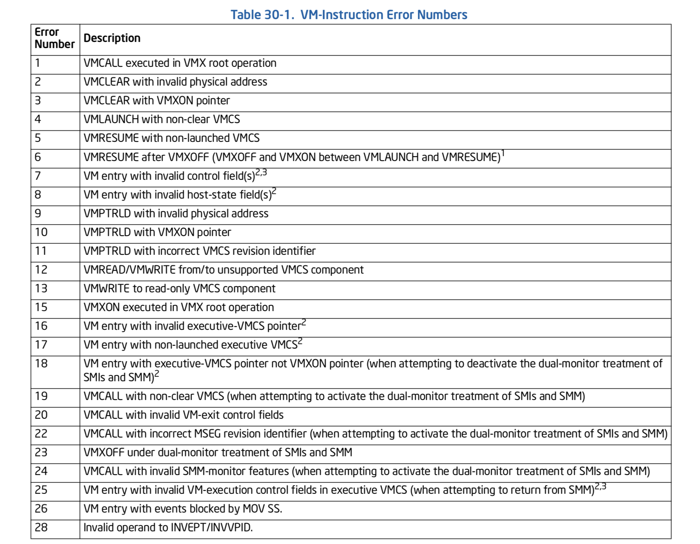
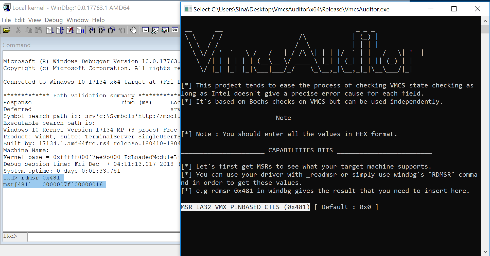

Introduction
If you’ve ever had experience with developing your own hypervisor from scratch then you definitely faced with the problems of layout checking. What makes it hard to develop a hypervisor is the fact that Intel has a small number of errors for a huge checklist described in [CHAPTER 26] VM ENTRIES from Intel’s 64 and IA-32 Architectures Software Developer’s Manual including:
- 26.2 CHECKS ON VMX CONTROLS AND HOST-STATE AREA
- 26.3 CHECKING AND LOADING GUEST STATE
- 26.4 LOADING MSRS
- 26.5 EVENT INJECTION
- 26.6 SPECIAL FEATURES OF VM ENTRY
- 26.7 VM-ENTRY FAILURES DURING OR AFTER LOADING GUEST STATE
- 26.8 MACHINE-CHECK EVENTS DURING VM ENTRY
You can check these lists by your own and if you can’t understand what is the exact problem then you can use some tools like Boch Emulator which supports the Intel VMX.
Unfortunately, Bochs emulator is really slow (as the nature of emulating) and sometimes have lots of problems with stability but there are lots of cool features that implemented in this emulator and one of them is VMX support. VMCS Auditor is a copy of Bochs emulator in a user-mode application. It asks you for each field of VMCS Layout and tells you what was your mistake.
Keep in mind, Bochs is just an implementation of Intel’s VMX behavior and by no mean 100% precise so there might be some problems which Bochs is not able to detect.
Note that even VMCS Auditor is a Windows executable file that runs in Windows, but its checks are related to CPU (not the OS) so it’s clear that you can give your VMCS Layout in other OSs like Linux or OS X an expect the same result.
Source code & Executables
The full source code and executable file are available on Github:
[https://github.com/SinaKarvandi/VMCS-Auditor]
Error Detection
The following table describes what error can occur for every vmx instructions.

VMCS Auditor focuses on Error Number #7 and #8 to perform the checking lists described in Intel’s SDM as implemented in Bochs emulator.
How to use?
In order to use VMCS Auditor, first, you have to enter some MSRs related to Intel’s VMX (e.g IA32_VMX_PINBASED_CTL). Second VMCS Auditor asks you for other options based on your settings, newer settings are appearing and if you have any problem configuring these options then the error(s) are shown to you.
If you have a problem with configuring MSRs, you have to open your Windbg in Local Kernel Debugging Mode (remember MSRs in a VM based kernel debugging might not be true for VMX related options) then you can use rdmsr which gives you the corresponding value.
For instance, we need to get MSR (0x481) then execute the following command in Windbg.
1
rdmsr 0x481
The above command’s result is illustrated below.

The following MSRs representing my own system’s MSRs for VMX.
1
2
3
4
5
6
7
8
9
10
11
12
13
14
15
16
17
18
19
20
21
22
lkd> rdmsr 0x481
msr[481] = 0000007f`00000016
lkd> rdmsr 0x482
msr[482] = fff9fffe`0401e172
lkd> rdmsr 0x48b
msr[48b] = 001ffcff`00000000
lkd> rdmsr 0x483
msr[483] = 01ffffff`00036dff
lkd> rdmsr 0x484
msr[484] = 0003ffff`000011ff
lkd> rdmsr 0x48c
msr[48c] = 00000f01`06334141
lkd> rdmsr 0x491
msr[491] = 00000000`00000001
lkd> rdmsr 0x486
msr[486] = 00000000`80000021
lkd> rdmsr 0x487
msr[487] = 00000000`ffffffff
lkd> rdmsr 0x488
msr[488] = 00000000`00002000
lkd> rdmsr 0x489
msr[489] = 00000000`003767ff
Future Works
- Adding support for config file that works with VMCS Auditor.
Contribution
If you want to contribute to this project (e.g adding more checks or make VMCS Auditor more precise) then you can use the GitHub or suggest edits below in the comments.
Conclusion
This tool is published in order to ease the hypervisor development, in the future part of the tutorial Hypervisor From Scratch, we’ll use this tool to test our VMCS Layout before any real-world testing.
References
[1] Vol 3C – 26 VM ENTRIES (https://software.intel.com/en-us/articles/intel-sdm)
[2] Bochs Emulator (http://bochs.sourceforge.net)
Comments powered by Disqus.